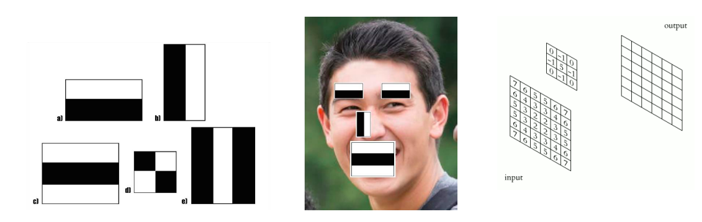
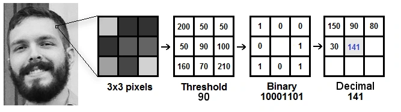
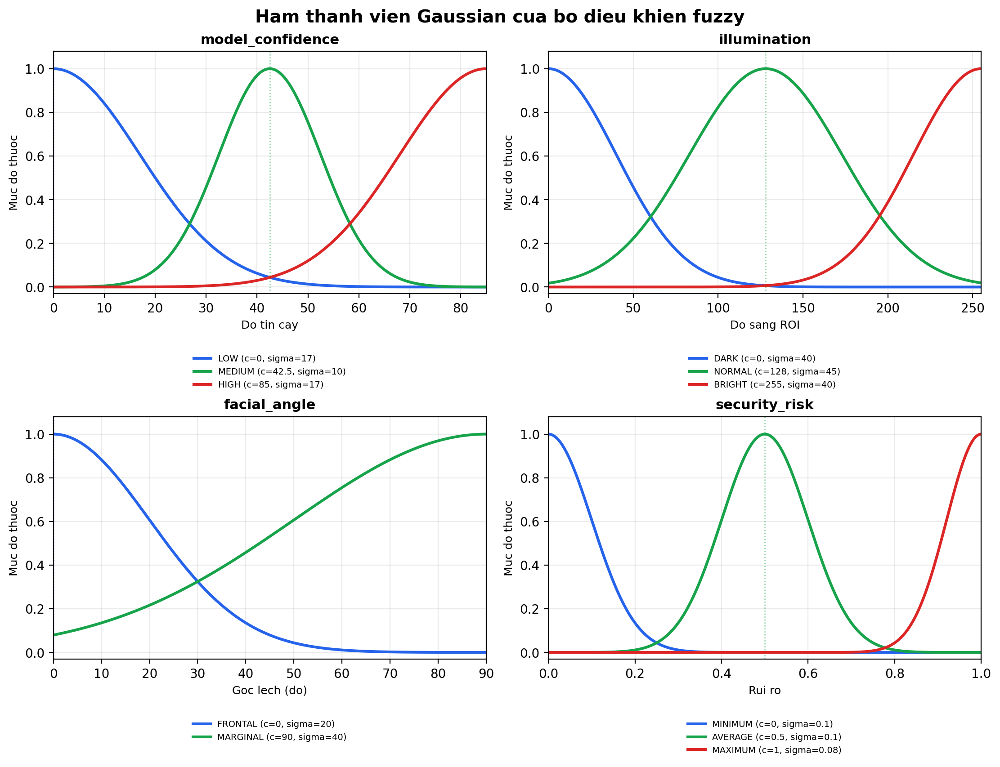
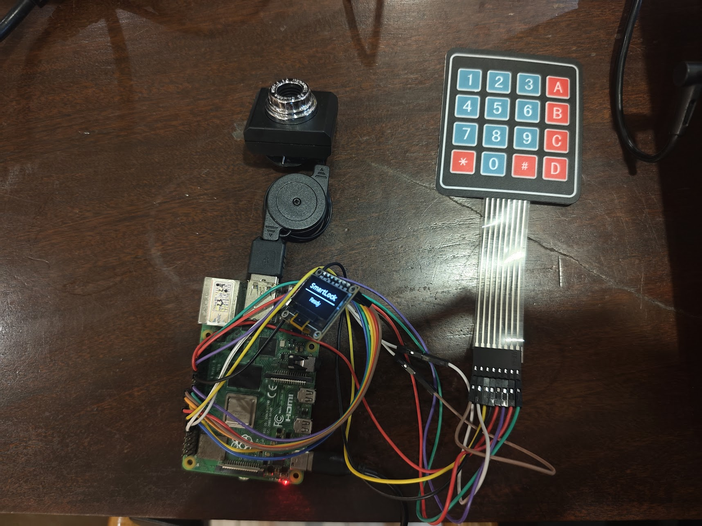
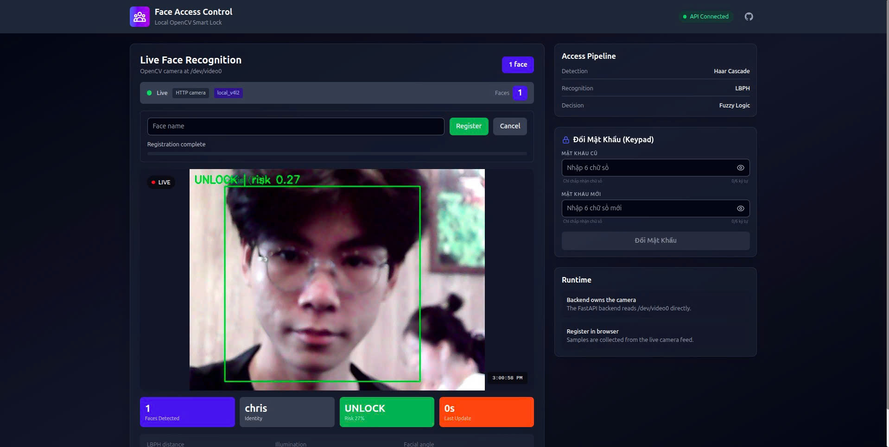
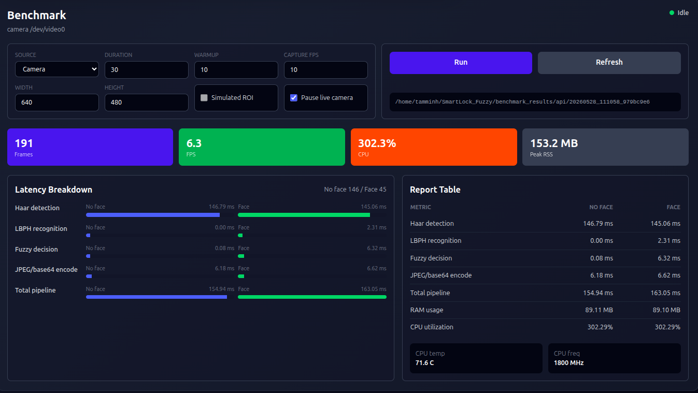

Hệ thống khóa cửa thông minh nhận diện khuôn mặt kết hợp Fuzzy Logic
Nguyễn Hữu Minh Chiến - 23520183
Phùng Minh Chí - 23520179
Nguyễn Lê Minh Anh - 23520063
Giảng viên hướng dẫn: ThS. Phạm Minh Quân
Nội dung trình bày
- Bài toán và mục tiêu
- Kiến trúc hệ thống
- Pipeline xử lý ảnh
- Fuzzy logic decision
- Tích hợp phần cứng
- Giao diện web
- Benchmark trên thiết bị edge
- Kết luận và hướng phát triển
Bài toán
- Khóa cơ, thẻ từ và mã PIN dễ mất, lộ hoặc bị sao chép.
- Nhận diện khuôn mặt tự nhiên hơn nhưng phụ thuộc ánh sáng, góc mặt và chất lượng camera.
- Thiết bị cần xử lý cục bộ để giảm phụ thuộc cloud và giữ dữ liệu hình ảnh tại biên.
Ý tưởng chính
Kết hợp nhận diện khuôn mặt với fuzzy logic để đánh giá rủi ro truy cập thay vì chỉ dùng một ngưỡng cứng.
Mục tiêu đề tài
- Xây dựng backend FastAPI đọc camera cục bộ và cung cấp API cho dashboard.
- Phát hiện khuôn mặt bằng Haar Cascade, nhận diện danh tính bằng LBPH.
- Tính model confidence, illumination và facial angle để đưa vào fuzzy controller.
- Tích hợp keypad 4x4, OLED SSD1306 và servo trên Raspberry Pi.
- Xây dựng dashboard Next.js để quan sát camera, đăng ký khuôn mặt, đổi PIN và chạy benchmark.
Kiến trúc tổng quan
Keypad / OLED / Servo
điều phối pipeline
Mamdani Fuzzy
Next.js Dashboard
Backend
Sở hữu camera, phần cứng, cache trạng thái và API.
Vision + Fuzzy
Phát hiện mặt, nhận diện, đo chất lượng frame và tính rủi ro.
Frontend
Hiển thị live camera, đăng ký khuôn mặt, đổi PIN và benchmark.
Pipeline xử lý một frame
- Nếu có nhiều khuôn mặt, hệ thống giữ bounding box lớn nhất.
- Frontend polling frame mới nhất qua
/api/v1/camera/frame.
Haar Cascade và LBPH

Haar Cascade
Phát hiện nhanh khuôn mặt frontal, phù hợp thiết bị edge.

LBPH
Nhận diện bằng histogram texture cục bộ; ngưỡng nhận diện trong code là 150.0.
Đặc trưng đầu vào cho fuzzy
Model confidence
Scale từ khoảng cách LBPH:C=max(0,100-70d/150)
Illumination
Trung bình pixel grayscale trong ROI khuôn mặt.
Facial angle
Ước lượng từ bất đối xứng sáng giữa hai nửa ROI.
Khi không có detection hoặc danh tính là Unknown, hệ thống xử lý theo hướng fail-safe.
Fuzzy logic decision

- Engine Mamdani với 3 input và 1 output.
- Hàm thành viên Gaussian cho confidence, illumination, angle và risk.
- AND dùng
Minimum(), aggregation dùngMaximum(). - Defuzzification bằng
Centroid(200).
Luật fuzzy và ánh xạ hành động
Nguyên tắc luật
- LOW confidence luôn dẫn tới MAXIMUM risk.
- HIGH confidence chỉ an toàn khi ánh sáng NORMAL và mặt FRONTAL.
- MEDIUM confidence cần điều kiện ảnh tốt; điều kiện xấu làm rủi ro tăng mạnh.
| Security risk | Action |
|---|---|
| < 0.30 | unlock |
| < 0.60 | otp |
| < 0.85 | deny |
| ≥ 0.85 | lockout |
Thiết kế phần cứng
| Thiết bị | Chức năng | GPIO |
|---|---|---|
| Keypad 4x4 | Row 1-4 | 17, 27, 22, 5 |
| Keypad 4x4 | Col 1-4 | 6, 13, 19, 26 |
| Servo | PWM signal | 18 |
| OLED SPI | DC, RST | 24, 25 |
| OLED SPI | MOSI, SCLK, CE0 | 10, 11, 8 |
Ghi chú đấu nối
- Keypad quét bằng interrupt trên cột.
- Servo dùng PWM, duty cycle về 0 sau khi quay.
- Servo dùng nguồn 5V ngoài và nối GND chung với Raspberry Pi.
Mạch đấu nối thực tế

- Raspberry Pi 4B là thiết bị edge chính.
- Camera USB phục vụ nhận diện.
- Keypad là kênh xác thực PIN dự phòng.
- OLED hiển thị trạng thái hệ thống.
- Servo mô phỏng cơ cấu chốt khóa.
Dashboard web

- Polling
/api/v1/camera/frame. - Hiển thị live frame, identity, LBPH distance, illumination và facial angle.
- Đăng ký khuôn mặt và đổi mã PIN từ giao diện web.
Benchmark trên dashboard

- Frontend có panel Benchmark để chạy và xem kết quả đo.
- Backend ghi
summary.json,summary.md,frames.csv. - Metric chính: FPS, CPU, RAM, nhiệt độ, latency từng bước.
Kết quả benchmark trên Raspberry Pi
| Chỉ số | Không có mặt | Có mặt |
|---|---|---|
| Face detection latency | 111.26 ms | 108.43 ms |
| Face recognition latency | 0.00 ms | 2.15 ms |
| Fuzzy decision latency | 0.08 ms | 5.90 ms |
| JPEG/base64 encode latency | 5.91 ms | 6.34 ms |
| Total pipeline latency | 121.36 ms | 127.36 ms |
| RAM usage | 89.27 MB | 89.25 MB |
| CPU utilization | 319.07% | 319.07% |
Nhiệt độ cuối: 67.7°C, CPU 1800 MHz, throttling 0x0.
Đánh giá
Kết quả đạt được
- Backend, frontend và phần cứng đã chạy thành một hệ thống hoàn chỉnh.
- Fuzzy logic đánh giá dựa trên cả danh tính và chất lượng frame.
- Độ trễ khoảng 127 ms khi có khuôn mặt, phù hợp kịch bản khóa cửa.
Giới hạn
- LBPH nhạy với ánh sáng và dữ liệu đăng ký.
- Facial angle mới là ước lượng tương đối.
- API quản trị và PIN runtime cần cơ chế bảo mật/lưu bền vững hơn.
Kết luận và hướng phát triển
- Đề tài hiện thực một khóa cửa thông minh chạy cục bộ trên Raspberry Pi, gồm nhận diện khuôn mặt, fuzzy decision, keypad, OLED, servo và dashboard web.
- Benchmark cho thấy pipeline đủ dùng cho kịch bản khóa cửa, nơi yêu cầu phản hồi ổn định dưới một giây.
- Hướng phát triển: face embedding nhẹ hơn, xác thực API, lưu PIN/log bằng SQLite, tăng test tự động và tối ưu face detection.